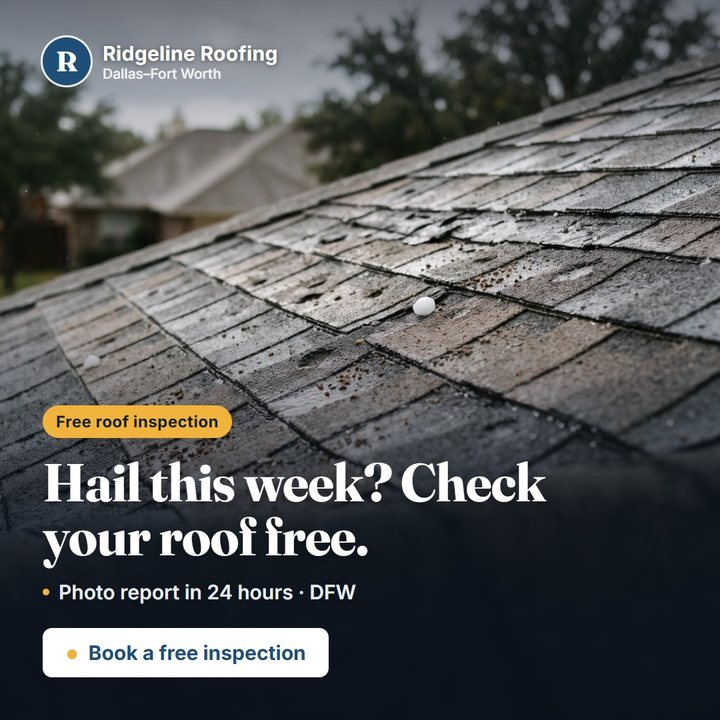
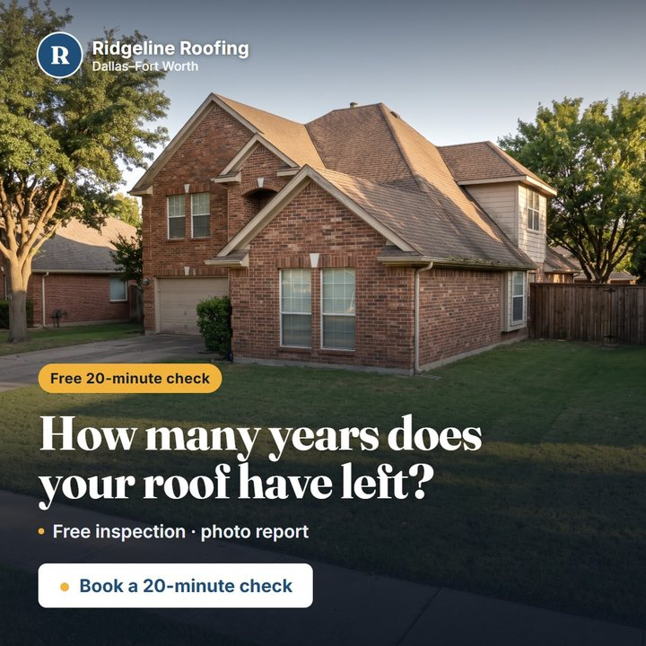
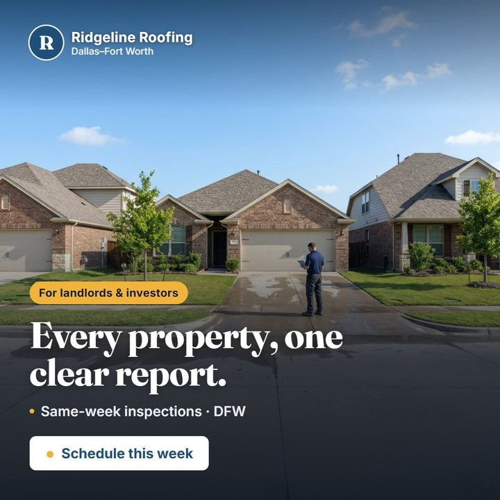
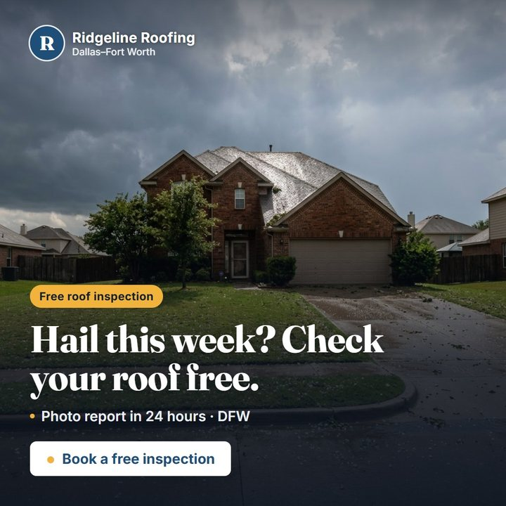

R
Ridgeline RoofingSponsored
Hail hit your area this week? Hail damage is often hard to see from the ground. We'll send a local inspector, take photos and show you exactly what we found. Free, no pressure.

Book a free inspectionBook now
Sample project · AI marketing workflow
I took a vague request, "we need more roof jobs this spring", and turned it into research, ads, a landing page, a follow-up sequence and a process anyone on a team can repeat. Everything here was produced with AI and checked by me.
Note: "Ridgeline Roofing" is a fictional client I made up for this exercise. The market facts are real and linked to their sources; the ads, page and messages are drafts to show the process, not a live campaign.
Built with: Claude (research, copy and prompts), web search with every source checked by hand, HTML and CSS · Time: about half a day
The request: "Ridgeline Roofing, Dallas–Fort Worth. We need more roof jobs this spring." Before writing a single ad, I broke it into the questions that change the answer:
| Question | Assumption I made | Why it matters |
|---|---|---|
| Who exactly are we trying to reach? | Homeowners in DFW after a hail event, plus owners of older roofs | Different message for "storm just hit" vs. "roof is getting old" |
| What is the first step we sell? | A free inspection with a photo report, not a roof | Nobody buys a $15k roof from an ad; they book an inspection |
| How fast can the team answer a lead? | Target: under 5 minutes, automated first touch | Speed to lead decides who gets the job |
| What can we legally promise? | Nothing about insurance paying or deductibles | Texas law limits what roofers can say about deductibles |
| How do we know it worked? | Cost per booked inspection, not cost per click | Clicks are cheap; inspections are the real signal |
I asked the AI to research the market, then opened every source myself. Where sources disagreed, I wrote the copy to be safe instead of picking the most exciting number.
Texas has been the top state for hail damage claims for 11 years in a row, and North Texas is where hail claims are most frequent.
Sources: NICB, United Policyholders
March and July are also active. Campaigns should be ready before the season and switch on within hours of a storm in the affected area. On Meta, roofing counts as housing repair, a Special Ad Category: no ZIP targeting, minimum 15-mile radius.
A 2% wind and hail deductible is now standard in North Texas. On a home insured for $400k, that's the first $8,000 of damage, so homeowners hesitate to even check.
Source: United Policyholders
Vendor blogs for roofers, citing general sales studies, show conversion dropping sharply after the first 5 to 30 minutes. The numbers vary by source, so I use them as a direction, not a promise.
Sources: JobNimbus, Pipelineon
In Texas it is illegal for a contractor to offer to waive, rebate or absorb a homeowner's deductible. Ads must never hint at "we'll cover your deductible".
Source: Texas Department of Insurance
Many Texas policies ask for claims within about a year of the storm, but it varies. The copy says "check your policy", never a fixed date.
Source: Kin Insurance
Homeowner in an area hit by hail in the last 30 days. Worried, unsure if there's damage, afraid of the deductible. Message: find out for free before you call your insurer.
Home built 15 to 25 years ago, no recent storm. Thinking about the next season. Message: know how many years your roof has left, with photos.
Owns rentals or just bought a property. Needs fast, documented answers for tenants and insurance. Message: one report per property, same-week inspection.
Each ad has one job: get an inspection booked. The photos were generated with an image model from the prompts below, with no text in the image; I added the headline, brand and button on top as a separate layer, so the copy is always exact and easy to change. Each ad was exported in the three Meta formats (1:1 feed, 4:5 feed, 9:16 stories).
Hail hit your area this week? Hail damage is often hard to see from the ground. We'll send a local inspector, take photos and show you exactly what we found. Free, no pressure.

Built between 2000 and 2010? Your roof may be near the end of its life. Get a free 20-minute inspection with photos and a straight answer on how many years it has left.

For DFW landlords: after a storm, you need answers for every property, fast. Same-week inspections and one clear photo report per address, ready to share.


Only the photo changes. A bets that seeing the damage up close makes people want to check; B bets that homeowners recognize their own house and street. Winner: the lower cost per booked inspection, once both versions have enough bookings to compare.
Ad 1 (A): Close-up of an asphalt shingle roof on a house in a Texas suburb right after a hailstorm. Small round dents and loose granules on the shingles, a few hailstones still resting on them, wet surface, overcast sky in soft focus. Documentary photo style, 50mm lens, shallow depth of field. Bottom third darker and simple for text. No people, no text, no logos. Ad 1 (B): Two-story brick house with a shingle roof in a Dallas-Fort Worth suburb just after a hailstorm, dark storm clouds moving away, light on the wet roof, scattered hailstones on the lawn. Eye-level from the street, realistic, damage not exaggerated. No people, no text, no house numbers. Ad 2: Aging brown shingle roof on a 2000s two-story brick house in a Dallas suburb, curled and sun-faded shingle edges, a little moss near the gutter, warm late-afternoon sun, eye-level from the sidewalk across the lawn. No people, no text, no house numbers. Ad 3: Row of three single-family rental houses in a North Texas neighborhood, clear sky after a storm, wet driveway, a roof inspector with a tablet seen from behind, small in the frame. Wide real-estate photo. No faces, no text, no house numbers.
One page, one action. Short form, a clear promise, and the answers to the three things people worry about: cost, pressure and insurance.
A local inspector checks your roof, sends you photos within 24 hours and shows you exactly what they found. You decide whether to contact your insurer.
Most roofing leads are lost after the form, not before it. This sequence runs automatically and stops the moment the lead books or replies. Texts only go to people who checked the consent box, and only during allowed hours under federal and Texas rules; the sender is registered under Texas telemarketing law (SB 140). Every email includes a postal address and an unsubscribe link.
The real deliverable is not this campaign; it's the process. Six steps, each with a prompt template, so anyone on the team can run it for a new city, a new storm or a new service.
You are a market researcher for a {service} company in {city}.
Find: (1) when demand peaks and why, (2) what stops homeowners from calling,
(3) any laws that limit what we can say in ads, (4) how fast leads must be answered.
For every fact, give the source link and the date of the source.
If sources disagree, say so and show both; do not pick one.
Answer in a table: fact | number | source | how reliable it is.
Using this brief and research: {paste brief + research table}
Write 3 ads for {audience}. Each ad: primary text (max 45 words), headline (max 8 words),
call to action, and an image prompt (realistic photo, no text in the image).
Rules: the offer is a free inspection; never promise that insurance will pay;
never mention waiving or covering deductibles; never suggest we handle, negotiate or judge insurance claims; no fake urgency; plain English,
6th-grade reading level.
Review these assets as a compliance and quality editor. Flag anything that: promises insurance coverage or results; mentions deductibles in a way that suggests we pay them; suggests we act as the adjuster or judge whether to file a claim; states a claim deadline as a fact; uses a statistic without a source; sounds pushy or fake-urgent. For each problem: quote the line, explain the risk, propose a fixed line.
AI output that sounds convincing is not the same as output you can publish. Checking the research turned up three traps. On the left, the kind of line an unguided AI draft produces; on the right, what went into the assets.
Texas prohibits contractors from offering to waive or absorb deductibles. I added this rule to the ad prompt and to the review checklist, so it can't come back. Contractors also can't act as, or suggest they are, the insurance adjuster.
The sources disagreed: many policies use about a year, some allow two, some differ. When sources disagree, the copy says less, not more.
The number traces back to cross-industry and vendor studies, not roofing data. It's a good reason to be fast; it's not a fact to sell with.
| Metric | What it tells us | First target |
|---|---|---|
| Cost per lead | Are the ads reaching the right people? | Set from the first 2 weeks of data |
| Time to first contact | Is the follow-up actually fast? | Under 5 minutes, every lead |
| Lead → inspection booked | Is the offer and follow-up working? | Track weekly, improve one step at a time |
| Cost per booked inspection | The number that decides the budget | The main KPI for the campaign |
| Inspection → signed job | Lead quality, by audience and ZIP | Compare audiences after 30 days |